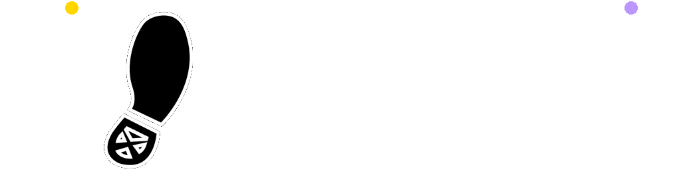

[ RETURN HOME ]

[Opt-Out]
An Open-World Turn-Based RPG of creatures and action.

this isn't a future that will be...
this isn't a future meant for you...
this isn't a future because of you...
this is just a future that is...

Will you Seek out the truth or Avoid the unknown?
...
Details:
Genre: Single-Player JRPG
Developer: MustardPlus
Publisher: MustardPlus
Platforms: Windows
Release Date: TBA
Made with GameMaker Studio 2.
Development roughly started: January 22, 2016
Development is currently on hold.
...


Yes. 2 Games.
[Opt-Out] and [Opt-Out]: Uncanny

[Opt-Out] originally started development in 2016.
It is currently on hold until [Opt-Out]: Uncanny is complete.
[Opt-Out]: Uncanny is a smaller story that will overlap with the story of [Opt-Out].
Uncanny will give you a good idea of what visual style and gameplay mechanics to expect from [Opt-Out].
Uncanny does not have a set timeframe for release, but playable demos* of the game will be released as the game is being made.
*All released demos of Opt-Out: Uncanny are made publicly available through this website, eventually. Announcements of new releases are done on the Opt-Out Discord Server. Very early access to demos is exclusive to patrons of the proper tier.
...
- ~ Return Home ~